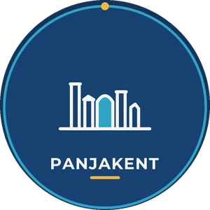
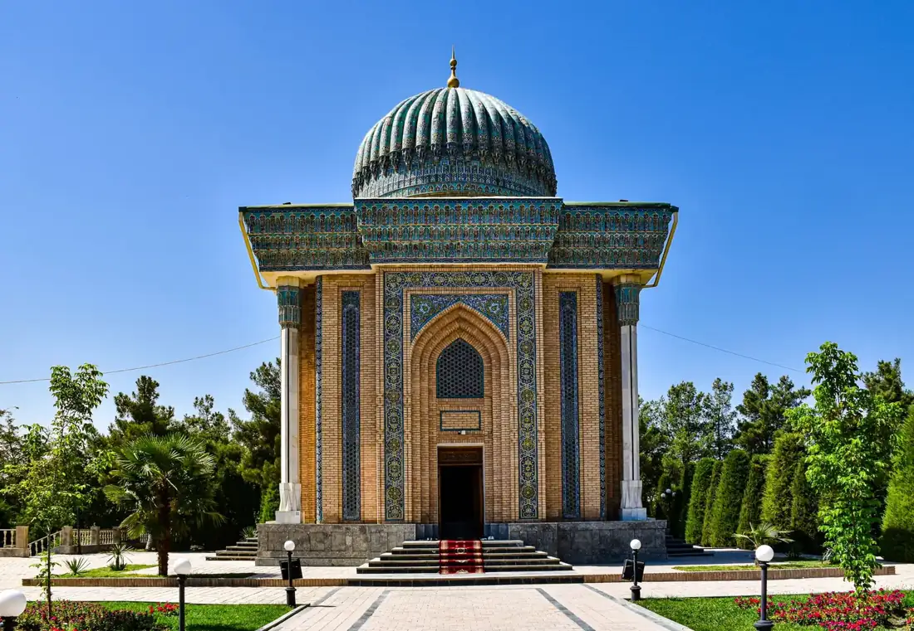
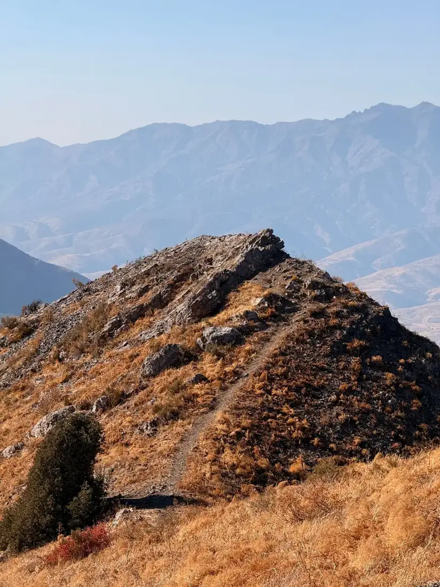
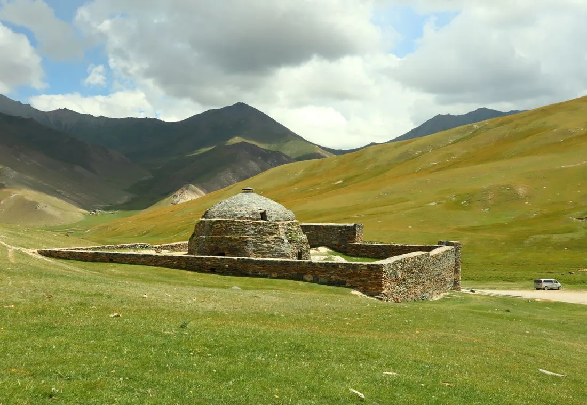
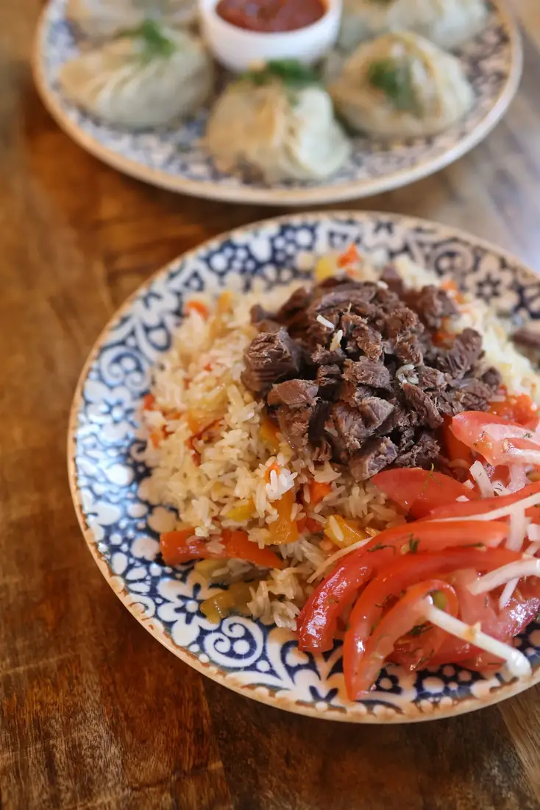

8 дн.
8 дн.UZ
Классический Узбекистан
Ташкент · Самарканд · Бухара · Хива
Ташкент, Самарканд, Бухара и Хива в одном путешествии
от… с человека
Смотреть тур →Индивидуальные туры и туры в небольших группах по Центральной Азии — бирюзовые купола, юрты в пустыне, горные озёра и настоящее восточное гостеприимство. Мы всё организуем — вы просто путешествуете.
Объедините лучшее в Центральной Азии в одной поездке — границы, транспорт и гидов мы берём на себя.
Самарканд, Бухара и Хива — голубые жемчужины Шёлкового пути, связанные скоростными поездами.
Горы вокруг Алматы, красные стены Чарынского каньона и священный город Туркестан.
Альпийские озёра, юрты кочевников, кони на бескрайних пастбищах и берега Иссык-Куля.
Древний Пенджикент, Худжанд на Сырдарье и Памир — крыша мира.

По шесть проверенных маршрутов в каждой стране — откройте тур, чтобы увидеть карту, программу по дням и цену.
8 дн.Ташкент, Самарканд, Бухара и Хива в одном путешествии
 5 дн.
5 дн.Две жемчужины Шёлкового пути за пять дней
 10 дн.
10 дн.От Хивы до Самарканда с ночью в юрте в пустыне

7 дн.Зиярат к великим имамам и суфийским шейхам

7 дн.Чимган, ночь в горном кишлаке и юрточный лагерь
 6 дн.
6 дн.Коканд, маргиланский шёлк и риштанская керамика
 4 дн.
4 дн.Город, Медеу, Большое Алматинское озеро и Чарын
 5 дн.
5 дн.Каньоны и горные озёра юго-востока Казахстана
 8 дн.
8 дн.Алматы, озёра, Туркестан и Астана
 4 дн.
4 дн.Паломничество в духовную столицу тюркского мира
 4 дн.
4 дн.Древние петроглифы, цветные горы и поющий песок
 4 дн.
4 дн.Футуристическая столица и «казахская Швейцария»
 7 дн.
7 дн.Тёплое озеро, красные скалы, беркутчи и каньоны
 5 дн.
5 дн.Юрты, лошади и высокогорное озеро на 3016 м
 9 дн.
9 дн.Лучшее в Кыргызстане за девять дней
 6 дн.
6 дн.Ледниковое озеро и источники Алтын-Арашана

6 дн.Каменный караван-сарай и ночи в юртах
 4 дн.
4 дн.3000-летний город и огромный ореховый лес
 5 дн.
5 дн.Искандеркуль, Семь озёр и древний Пенджикент
 10 дн.
10 дн.«Крыша мира» от Душанбе до Оша
 3 дн.
3 дн.Короткая поездка к озёрам Фанских гор
8 дн.Город Шёлкового пути и озёра Фанских гор
 6 дн.
6 дн.Гиссар, Истаравшан, Худжанд и согдийский Пенджикент
 7 дн.
7 дн.Поход с палатками между изумрудными озёрами
Не нашли подходящий тур? Составим индивидуальный маршрут для пары, семьи или группы.
Выберите места, количество ночей, отели, транспорт и гида — маршрут на карте и примерная цена сразу.
Собрать тур →


Это не только памятники. Это плов из огромного казана, утро на базаре и чай с новыми друзьями.



Наша команда живёт в Узбекистане и знает каждую улицу, гида и тайное место.
Отели, поезда, трансферы, гиды и входные билеты — в одном понятном пакете.
Халяльное питание, время для намаза и комфортный темп для семей с детьми.
Гиды на русском и английском; на турецком и арабском — по запросу.
Без скрытых доплат — вы заранее видите, что входит в стоимость.
Живой менеджер в WhatsApp или Telegram на протяжении всей поездки.
Расскажите о датах, составе группы и пожеланиях в WhatsApp или Telegram.
Мы составим маршрут по дням с понятной ценой для вашей группы.
Встретим вас в аэропорту и позаботимся обо всём остальном.
Граждане многих стран могут посетить Узбекистан, Казахстан и Кыргызстан без визы или по простой электронной визе. Напишите нам страну паспорта — мы проверим актуальные правила.
Весна (апрель–июнь) и осень (сентябрь–октябрь) идеальны для городов. Лето — сезон гор и озёр Кыргызстана и Таджикистана.
Да. Мы организуем индивидуальные туры для пар и семей, а также групповые туры и программы для турагентств.
Большая часть еды в регионе — халяль. Также можем выстроить программу с учётом времени намаза и посещения святых мест.
Напишите нам в WhatsApp или Telegram. После согласования программы мы подтвердим бронь и пришлём реквизиты для оплаты.
Да. Мы обеспечиваем приём групп и партнёрские цены для агентств.
Выберите удобный способ связи — пришлём идеи, программу и цену.